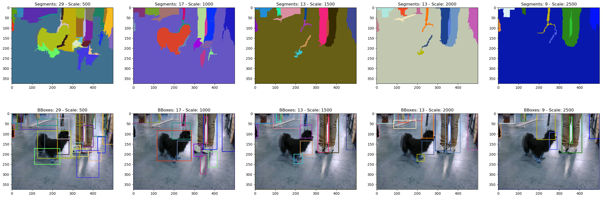

Code
import cv2
import numpy as np
from typing import List, Tuple, Dict
import matplotlib.pyplot as plt
def get_selective_search_segments(
image: np.ndarray,
scale: float = 500.0, # Higher means larger segments
sigma: float = 0.9, # Width of Gaussian kernel
min_size: int = 20 # Minimum component size
) -> Tuple[np.ndarray, List[Dict]]:
"""
Get image segmentations using selective search's underlying segmentation algorithm.
Args:
image: Input image (BGR format)
scale: Free parameter. Higher means larger segments
sigma: Gaussian kernel width
min_size: Minimum component size
Returns:
Tuple containing:
- Segmentation map (labeled image where each segment has unique integer)
- List of segment information dictionaries
"""
# Convert to float32
float_img = np.float32(image)
# Initialize segmentation
seg = cv2.ximgproc.segmentation.createGraphSegmentation(
sigma=sigma,
k=scale,
min_size=min_size
)
# Perform segmentation
labels = seg.processImage(float_img)
# Get unique segments
unique_labels = np.unique(labels)
# Process each segment
segments = []
for label in unique_labels:
# Create mask for this segment
mask = (labels == label).astype(np.uint8)
# Get bounding box
contours, _ = cv2.findContours(mask, cv2.RETR_EXTERNAL, cv2.CHAIN_APPROX_SIMPLE)
if contours:
x, y, w, h = cv2.boundingRect(contours[0])
# Get segment properties
segment_info = {
'label': int(label),
'mask': mask,
'bbox': (x, y, w, h),
'area': np.sum(mask),
'mean_color': np.mean(image[mask > 0], axis=0)
}
segments.append(segment_info)
return labels, segments
def visualize_segments(
image: np.ndarray,
labels: np.ndarray,
segments: List[Dict],
max_vis: int = 5,
add_labels: bool = False
) -> Tuple[np.ndarray, np.ndarray]:
"""
Visualize the segmentation results with colored segments and bounding boxes.
Args:
image: Original image
labels: Segmentation map
segments: List of segment information
max_vis: Maximum number of segments to visualize
Returns:
Tuple containing:
- colored_segments: Image with each segment colored differently
- bbox_image: Original image with bounding boxes drawn
"""
# Create random colors for visualization
n_segments = len(segments)
colors = np.random.randint(0, 255, (n_segments, 3), dtype=np.uint8)
# Create colored segmentation map
colored_segments = np.zeros_like(image)
for i, segment in enumerate(segments):
colored_segments[labels == segment['label']] = colors[i]
# Create image with bounding boxes
bbox_image = image.copy()
# Draw bounding boxes for max_vis segments
for i, segment in enumerate(segments[:max_vis]):
if i >= max_vis:
break
# Get bounding box coordinates
x, y, w, h = segment['bbox']
# Draw rectangle with the same color as segment
color = tuple(map(int, colors[i])) # Convert to tuple for cv2.rectangle
cv2.rectangle(bbox_image, (x, y), (x + w, y + h), color, 2)
if add_labels:
# Optionally add label
label_text = f"Segment {i+1}"
cv2.putText(bbox_image, label_text, (x, y-5),
cv2.FONT_HERSHEY_SIMPLEX, 0.5, color, 2)
return colored_segments, bbox_image
# Read image
image = cv2.imread('/home/ben/data/dogs-vs-cats/train/dog.1000.jpg')
if image is None:
raise ValueError("Could not read the image")
fig, ax = plt.subplots(ncols=5, nrows=2, figsize=(30, 10))
for i in range(5):
# Get segmentation
scale = 500*(i+1)
labels, segments = get_selective_search_segments(image, scale=scale, min_size=500)
num_segments = len(segments)
# Visualize results
colored_segs, bbox_image = visualize_segments(image, labels, segments, max_vis=num_segments)
ax[0, i].imshow(colored_segs)
ax[0, i].set_title(f"Segments: {num_segments} - Scale: {scale}")
ax[1, i].imshow(bbox_image)
ax[1, i].set_title(f"BBoxes: {num_segments} - Scale: {scale}")
plt.show()